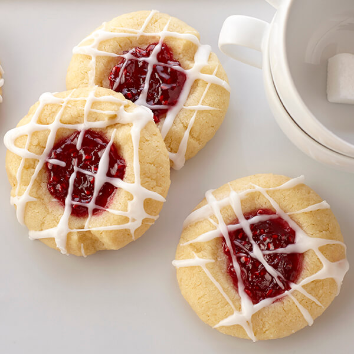

WE ARE HUNGRY!
We want cookies
(please)
Raspberry Almond Shortbread Thumbprint Cookies

Ingredients
Cookie
- 1 cup butter, softened
- 2/3 cup sugar
- 1/2 teaspoon almond extract
- 2 cups all-purpose flour
- 1/2 cup raspberry jam
Glaze
- 1 cup powdered sugar
- 2 to 3 teaspoons water
- 1 1/2 teaspoons almond extract
Steps
- Combine butter, sugar and 1/2 teaspoon almond extract in bowl. Beat at medium speed, scraping bowl often, until creamy. Add flour; beat at low speed, scraping bowl often, until well mixed. Cover; refrigerate at least 1 hour or until firm.
- Heat oven to 350°
- Shape dough into 1-inch balls. Place 2 inches apart onto ungreased cookie sheets. Make indentation in center of each cookie with thumb (edges may crack slightly). Fill each indentation with about 1/4 teaspoon jam.
- Bake 14-18 minutes or until edges are lightly browned. Let stand 1 minute on cookie sheets; remove to cooling rack. Cool completely.
- Combine all glaze ingredients in bowl with whisk until smooth. Drizzle over cookies.